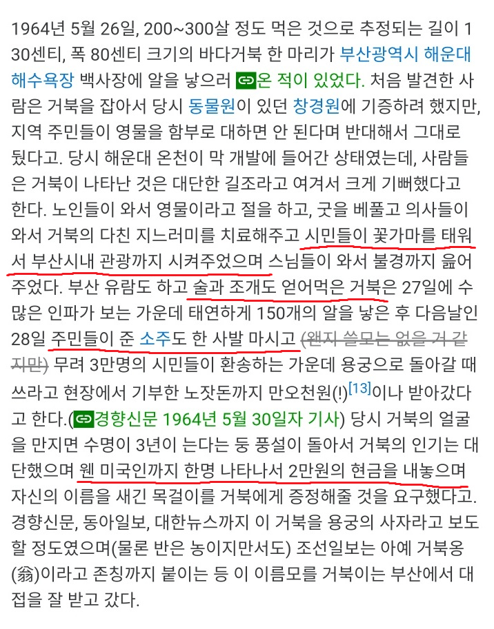
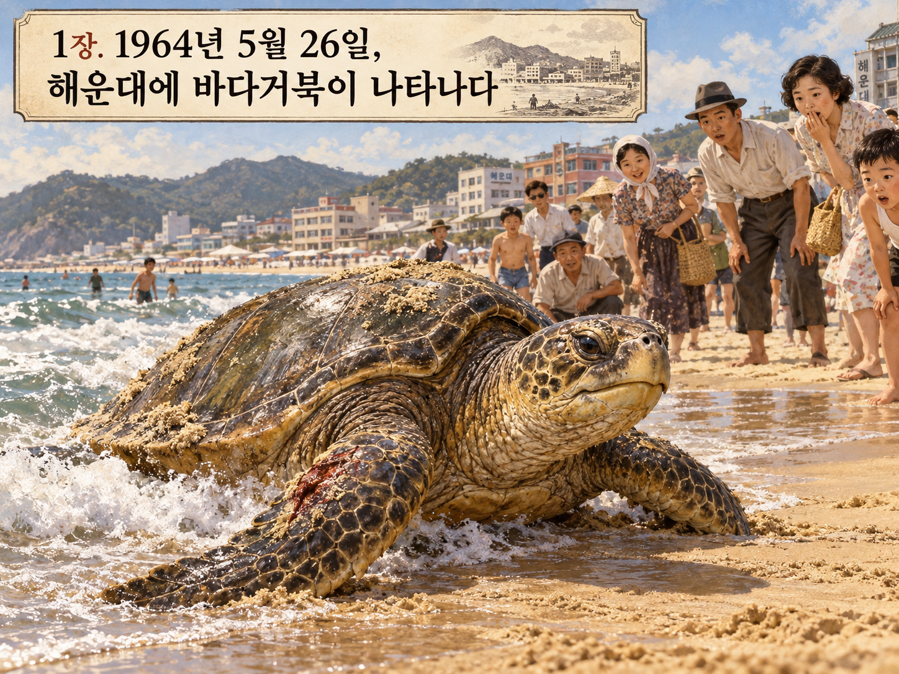
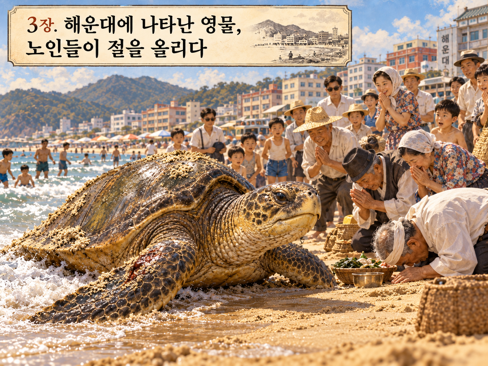
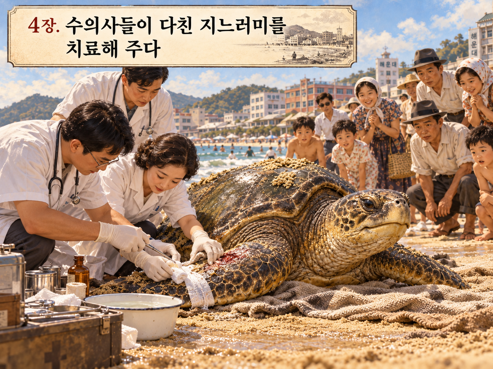
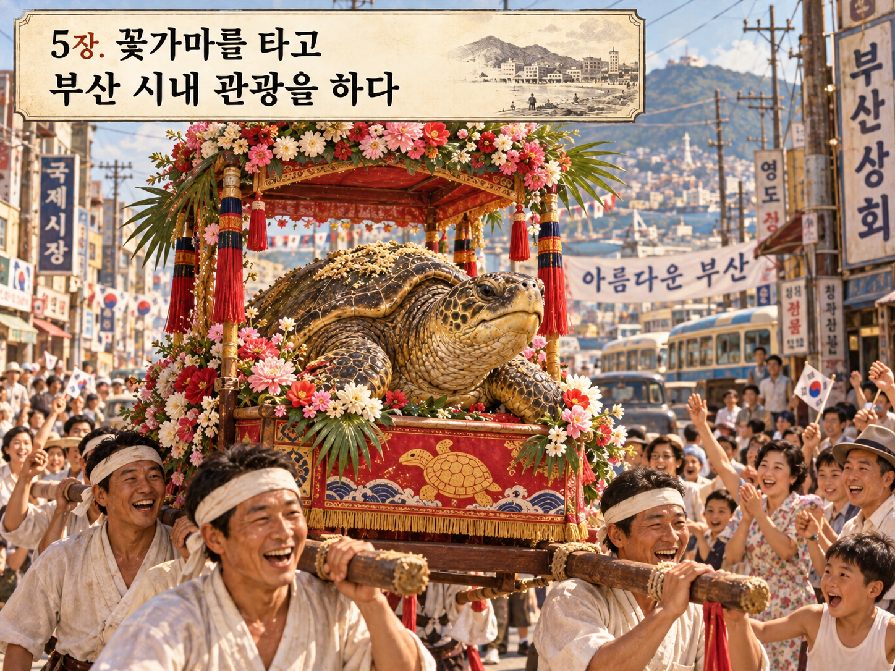
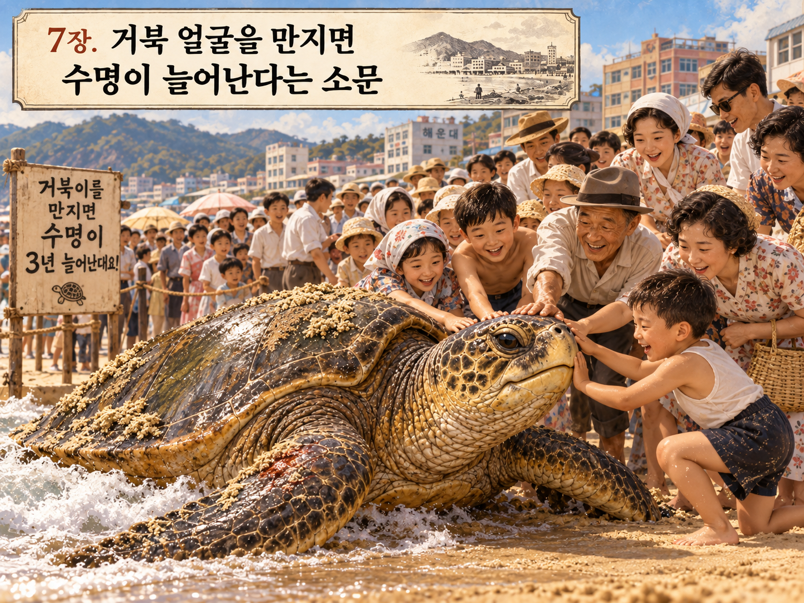
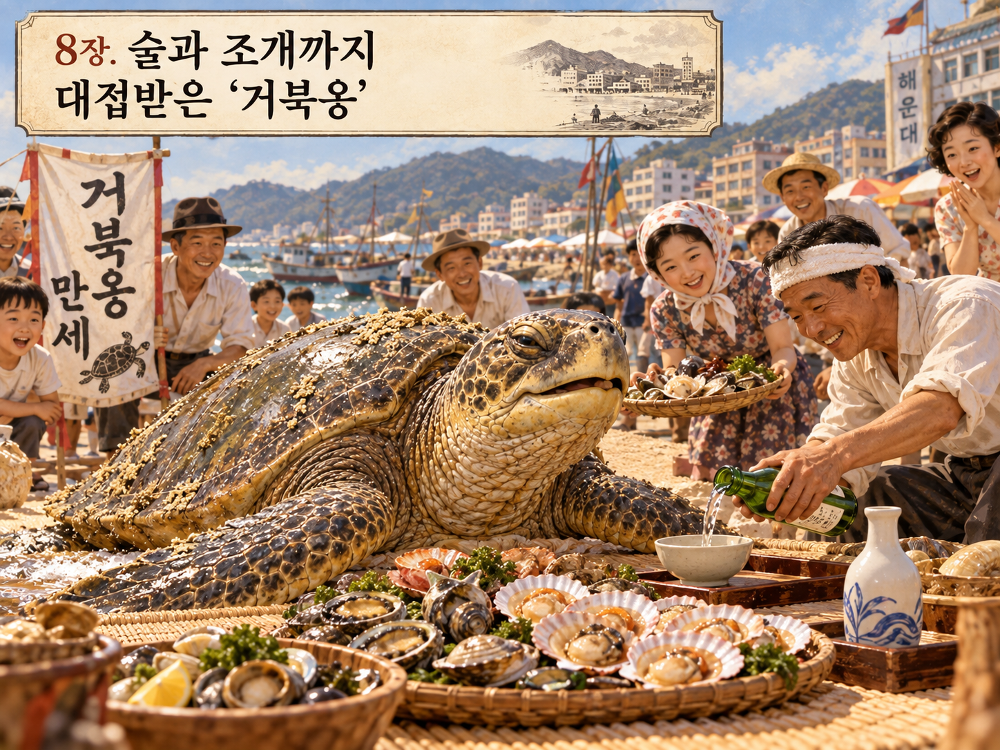
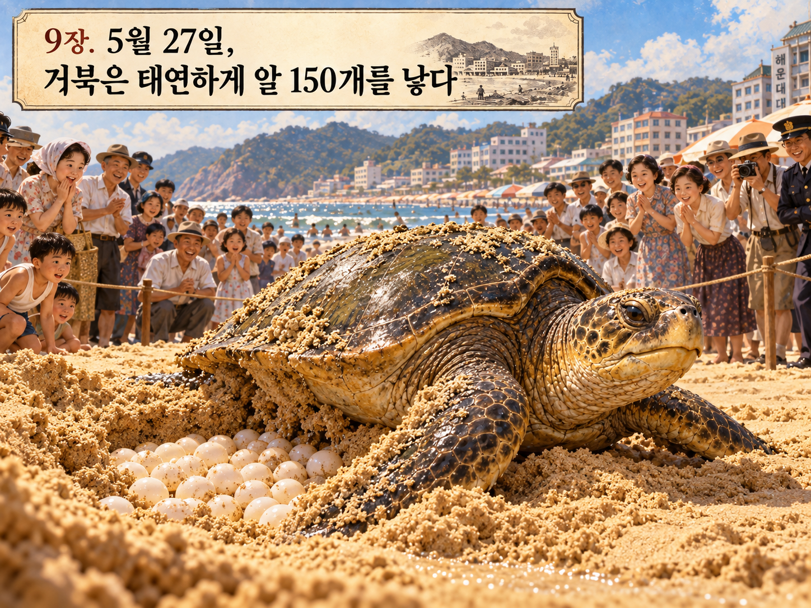
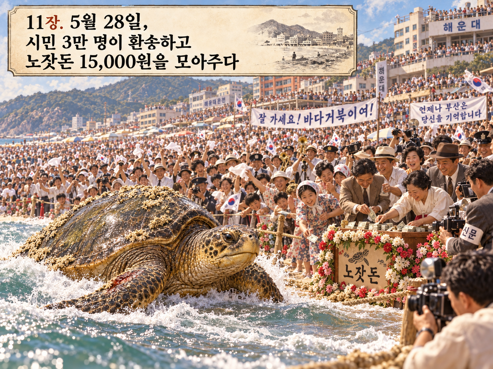
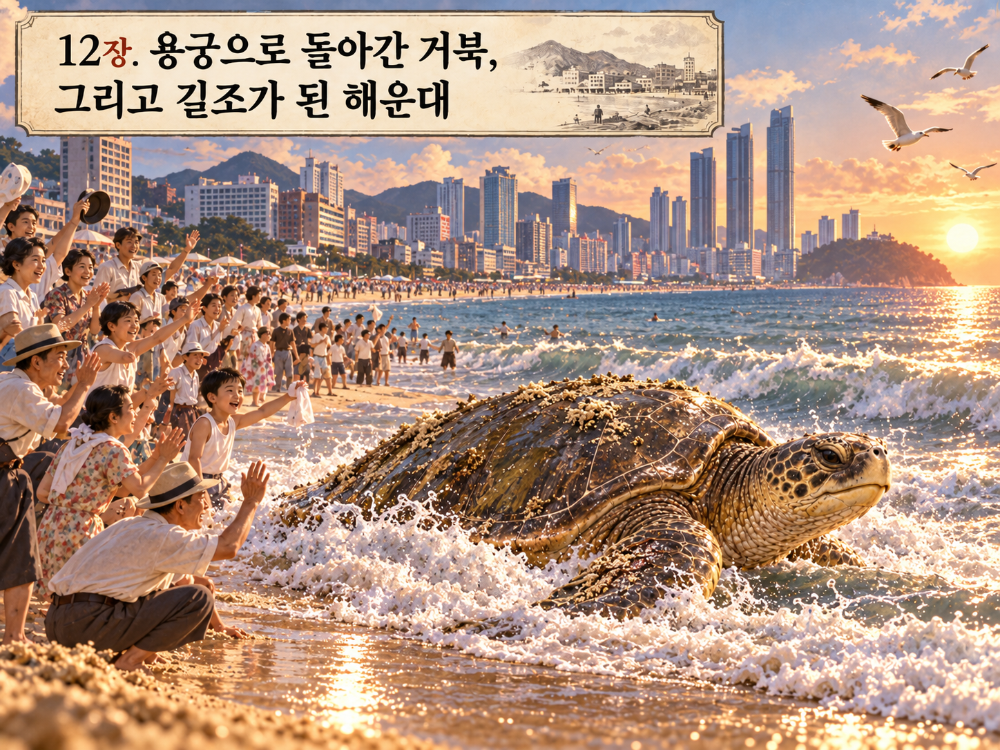
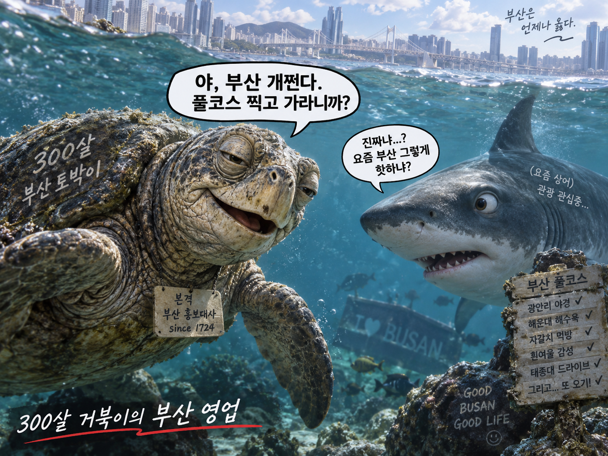
아무래도 이 거북이가 부캉이한테 알려준 듯?











아무래도 이 거북이가 부캉이한테 알려준 듯?
그러나 다시 오지 않았다고 한다
아직도 살아있을까?
ai이미지 안달았으면 개드립 보낼려고했는데.
“나는 개드립을 통제할 수 있다“
ㄹㅇ ㅋㅋ 틀내 나긴해
저 알은 안 훔쳐갔나
알은 구라일걸??
거부캉 ㅅㅂ ㅋㅋ
다 그렇다치고 꽃가마 태우고 부산 투어는 그때 만의 낭만인듯 ㅋㅋㅋㅋㅋ
저때 낳은 알들은 부화했음? 거북이는 태어난곳으로 돌아와서 다시 알낳는다던디
사람들이 많이 몰려왔을텐데 알 낳았다는 거 보니 그게 위협이 아니라는 걸 제대로 이해했나보네. 신기하다 ㅋㅋ
오히려 뒤질 것 같아서 아 알 마렵다 하고 알 낳는거 아닐까
거북옹 ㅋㅋㅋㅋㅋ
당시 모금액 12,000원 이면 현재 가치로 12억 정도네
바다거북 꽃가마 투어는 뭔가 굉장하네 ㅋㅋㅋㅋㅋ
태연하게 알까지 낳고 갔었네ㅋㅋㅋㅋ
거북캉이가 원조라니